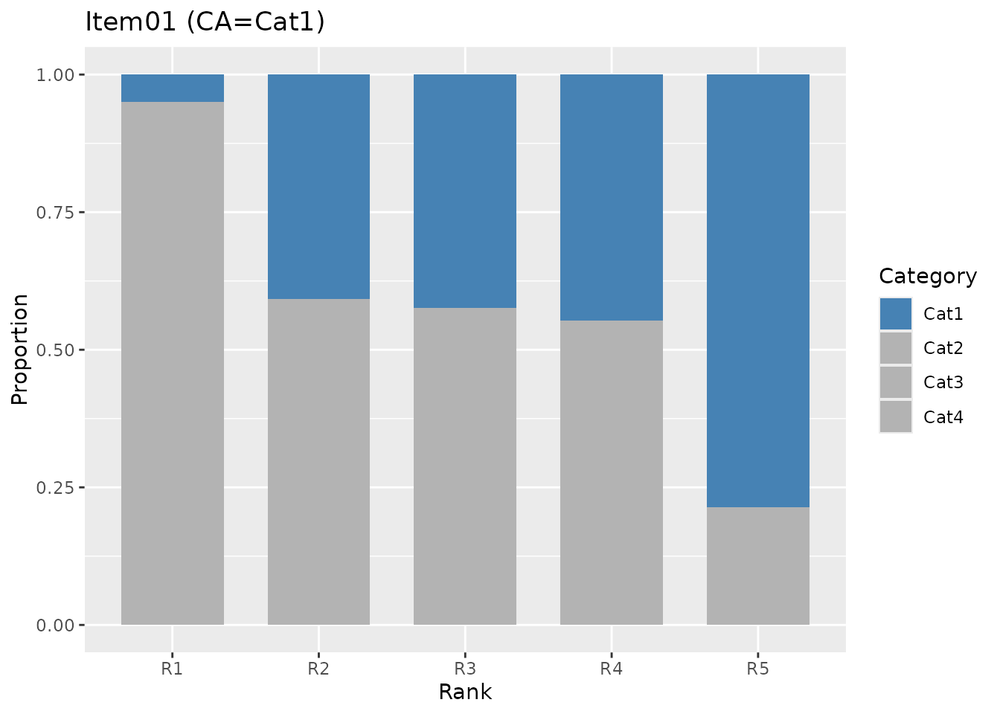
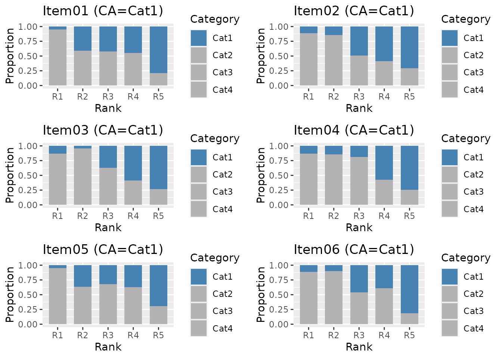

Creates stacked bar charts showing the proportion of each response category by rank/class for each item. The correct answer category is highlighted in a distinct color to visualize how well each item discriminates across ability levels.
Usage
plotDistractor_gg(
data,
items = NULL,
ranks = NULL,
title = TRUE,
colors = NULL,
show_legend = TRUE,
legend_position = "right"
)Arguments
- data
An object of class
c("DistractorAnalysis", "exametrika")fromexametrika::DistractorAnalysis().- items
Integer vector of item indices to plot. If
NULL(default), plots all items.- ranks
Integer vector of rank/class indices to display. If
NULL(default), displays all ranks/classes.- title
Logical or character. If
TRUE(default), displays an auto-generated title. IfFALSE, no title. If a character string, uses it as a custom title (appended with item label).- colors
Character vector of colors for response categories. If
NULL(default), uses steelblue for the correct answer and gray70 for distractor categories. When specified, colors are assigned to categories in order (Cat1, Cat2, ...).- show_legend
Logical. If
TRUE(default), displays the legend.- legend_position
Character. Position of the legend. One of
"right"(default),"top","bottom","left","none".
Details
Distractor Analysis examines how examinees in different ability ranks or latent classes respond to multiple-choice items. For each item, a stacked bar chart shows the proportion of respondents choosing each category.
A well-functioning item should show the correct answer category (highlighted in blue by default) increasing in proportion as rank/class increases, while distractor categories decrease.
This function works with DistractorAnalysis objects produced from
LRA (rated data) and Biclustering / Biclustering_IRM
(rated data) results.
Examples
# \donttest{
library(exametrika)
# LRA.rated example
result_lra <- LRA(J21S300, nrank = 5, mic = TRUE)
da <- DistractorAnalysis(result_lra)
# Plot a single item
plots <- plotDistractor_gg(da, items = 1)
plots[[1]]

# Plot multiple items
plots <- plotDistractor_gg(da, items = 1:6)
combinePlots_gg(plots, selectPlots = 1:6)

# Select specific ranks
plots <- plotDistractor_gg(da, items = 1, ranks = c(1, 3, 5))
# Custom colors
plots <- plotDistractor_gg(da,
items = 1,
colors = c("tomato", "steelblue", "gold", "gray70")
)
# }